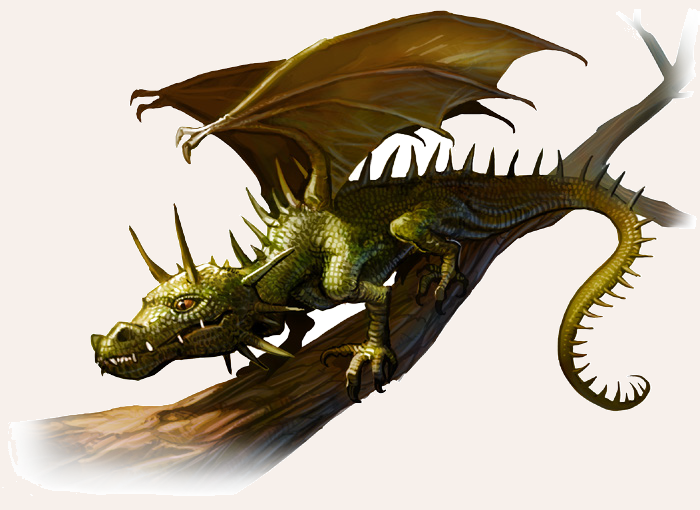

Diese mit einer Flügelspannweite von ungefähr drei Schritt recht kleine Drachenart hat mit ihren uralten und furchteinflößenden Verwandten nicht mehr als das grundlegende Erscheinungsbild und die eine oder andere Eigenart gemein. Neben der borkigen Haut, deren grünlich braune Färbung ihnen eine vorzügliche Tarnung in allerlei Blattwerk verleiht, und einem reißzahnbewehrten Maul, verfügen sie über ledrige Schwingen, die sie zu ebenso geschickten wie waghalsigen Flugkünstlern macht - auch wenn der Baumdrache seine Schwingen ausschließlich zum Gleiten benutzt. Nicht weniger beeindruckend sind ihre Kletterfähigkeiten, wodurch sie mit Hilfe ihrer messerscharfen Klauen gewaltige Baumstämme in Windeseile erklimmen können, in deren Kronen sie nisten und ihre vergleichsweise bescheidenen Horte anlegen. Keine andere Drachenart ist so verbreitet wie Baumdrachen. In den meisten Fällen, in denen ein Mensch einem Drachen begegnet, handelt es sich um eine Begegnung mit solchen Vertretern des Drachengeschlechts. Baumdrachen werden von Menschen oft als Schädlinge betrachtet und Adlige und andere regionale Herrscher schreiben häufig ein Kopfgeld auf sie aus. Selbsternannte Drachenjäger machen sich dann auf, um das Untier zur Strecke zu bringen, obwohl es sich so gut wie nie von selbst einem Menschen oder einer Siedlung nähert und somit kaum eine Gefahr darstellt.

Verbreitung
Baumdrachen sind in ganz Aventurien verbreitet, neigen aber dazu, extreme Temperaturen zu meiden.
Sie bevorzugen Gegenden, in denen besonders hohe Bäume wie Eichen oder Urwaldriesen wachsen.
Landläufig gelten sie eher als Plage und nicht als Bedrohung, zumal sie anders als ihre mächtigen Vettern weder über magische noch anderweitig bemerkenswerte Verstandeskräfte verfügen.
In Südaventurien sind sie seltener, dafür weisen die dort lebenden Baumdrachen oft eine andere Schuppenfärbung auf und können sich dadurch besser tarnen, was es ihnen ermöglicht, sich leichter an ihre Beute heranzupirschen.
Obwohl sie von den Menschen gejagt werden, ist die Population der Baumdrachen sehr konstant, was auch daran liegt, dass die Weibchen regelmäßig Eier legen.
Lebensweise
Die meist allein oder in kleinen Schwarmverbänden lebenden Baumdrachen errichten selten eigene Nester.
Sie vertreiben stattdessen häufig Adler oder andere Großvögel aus ihren Domizilen, die sie anschließend nach ihren eigenen Bedürfnissen ausbauen.
Ihre räuberische Natur haben sie mit anderen Drachenarten gemein, weswegen auch sie beachtliche Horte aus glitzerndem Tand und anderem wertlosen Plunder anlegen.
Gemeinhin gelten Baumdrachen als besonders standorttreu und können ein Lebensalter von bis zu hundert Jahren erreichen, sofern sie nicht den Falschen bestehlen.
Baumdrachen fressen kleinere Beutetiere wie Marder, Hasen, Insekten und Mäuse. Zweibeiner stehen nicht auf ihrem Speiseplan, aber sie verschmähen auch deren Kadaver nicht.
Mit Grubenwürmern, einer anderen niederen Drachenart, scheinen die Baumdrachen nicht gut auszukommen.
Begegnen sich beide, kommt es fast zwangsläufig zu einem Kampf.
Der Grund für diesen Hass ist jedoch niemandem bekannt.
In ihrem Nest legen die Drachenweibchen auch ihre Eier ab.
Im Gegensatz zu den meisten anderen Drachen legen Baumdrachen zwei, drei oder vier Eier, wobei nur selten mehr als zwei Baumdrachenjungen das Erwachsenenalter erreichen.
Baumdrache
Größe: 1,25 bis 1,50 Schritt lang (ohne Schwanz); 2,50 bis 3,00 Schritt (mit Schwanz); Flügelspannweite 2,80 bis 3,00 Schritt
Gewicht: 50 bis 75 Stein
Eigenschaften:
MU 13
KL 12
IN 13
CH 11
FF 10
GE 14
KO 15
KK 14
LeP: 25
AsP: -
KaP: -
INI: 16+1W6
SK: 2
ZK: 2
GS: 6/20 (an Land / in der Luft)
VW: 7
Biss:
AT: 12
TP: 1W6+4
RW: kurz
Klauen:
AT: 15
TP: 1W6+3
RW: kurz
Feuerodem*:
AT: 18
LZ: 1
TP: 1W6
RW: 3/5/7 Schritt
RS/BE: 1/0
Aktionen: 1
Vor- und Nachteile:
keine
Sonderfertigkeiten:
Anspringen (Klauen),
Flugangriff (Klauen),
Wuchtschlag I (Biss, Klauen)
Talente:
Fliegen 10 (13/13/14),
Klettern 10 (13/14/14),
Körperbeherrschung 10 (14/14/15),
Kraftakt 8 (15/14/14),
Schwimmen 0 (14/15/14),
Selbstbeherrschung 4 (13/13/15),
Sinnesschärfe 10 (12/13/13),
Verbergen 7 (13/13/14),
Einschüchtern 7 (13/13/11),
Willenskraft 2 (13/13/11)
Anzahl: 1 oder 1W6+1 (Schwarmverband)
Größenkategorie: mittel
Typus: Drache, nicht humanoid
Kampfverhalten: Baumdrachen lassen Menschen in Ruhe, es sei denn, sie bedrohen ihr Nest oder haben sichtbar funkelnde Gegenstände dabei.
Dann greifen sie im Flug an und versuchen ihre Gegner anzuspringen, bis sie den Gegenstand haben oder ihr Gegner tot ist.
Flucht: Verlust von 50% der LeP
Beute: 35 Rationen (Fleisch, ungenießbar), diverse blinkende Objekte wie Münzen, Besteck oder Ringe im Drachennest (Wert: 1W6x1W6 Silbertaler), Drachenschuppen (35 Silbertaler), Trophäen (Zähne, 12 Silbertaler; Drachentränen, 2 Silbertaler; Drachenspeichel 1 Silbertaler, Drachenblut, 2 Silbertalter; Karfunkel, 100 Silbertaler)
Sonderregeln:
* Feuerodem: Der Baumdrache kann seinen Feuerodem insgesamt fünfmal am Tag einsetzen.
Leicht entflammbare Ziele können durch den Odem in Brand geraten.
Bei einer 1 auf W6 erleidet der Held den Status Brennend durch seine brennende Kleidung.
Der Feuerodem richtet sich immer nur gegen ein Ziel pro Anwendung.
Gleiche Bewegungsabläufe: Wer die Bewegungsabläufe des Baumdrachen kennt (siehe Probe auf Tierkunde QS 3), der erhält einen Bonus von 2 auf Ausweichen gegen den Feuerodem des Baumdrachen.
Blitzende Gegenstände: Sollte sich ein Held in Sichtweite eines Baumdrachen befinden und auffällige blinkende Gegenstände bei sich tragen, muss der Baumdrache eine Probe auf Willenskraft ablegen.
Bei Misslingen der Probe macht sich der Baumdrache auf, um den Gegenstand zu stehlen.
| LeP-Verlust | Schmerz | |
|---|---|---|
| 19 LeP (¾) | +1 Schmerz | |
| 13 LeP (½) | +1 Schmerz | |
| 6 LeP (¼) | +1 Schmerz | |
| 5 LeP und weniger | +1 Schmerz |
| Tierkunde | (Ungeheuer) | |
|---|---|---|
| QS1 | Baumdrachen reagieren aggressiv, wenn man ihre Nester bedroht. Sie mögen blinkende Gegenstände. | |
| QS2 | Mit funkelnden Dingen kann man sie anlocken. Ihren Feuerodem können sie täglich fünfmal einsetzen. | |
| QS3 | Dem Feuerodem kann man durch bestimmte Bewegungsabläufe leichter entgehen. |